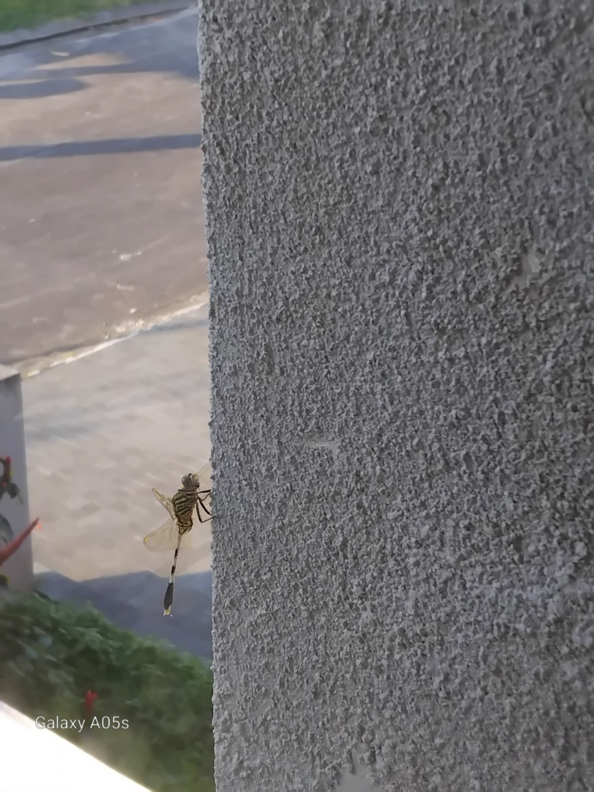

Here’s a list of words or phrases or names that kept coming up:
It was a battering.
| Criminal gang type | Budget | Core process | End goal | Methods |
|---|---|---|---|---|
| Porn gang | €/£ Thousands - as little as possible, slave labour mostly | Violence and violation | Criminal porn production by any means necessary, always worsening in step with porn-addict appetites | Sedation, drugging, poisoning, psychological torture, hacking, murder, serious sex offending |
| Security services aka The Mayor of Shark City | $/£ Multi-millions, thousands of salaried individuals | Violence and violation | Whatever they want, often nothing to do with security, mostly coming from insane logic based on core process | Sedation, drugging, poisoning, psychological torture, hacking, murder, clandestine surgeries |